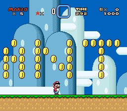

Super Mario World Modding
What is Super Mario World?
Super Mario World is a platform game released for the SNES in 1990. It's the sixth main-series Mario game, and the first one to feature Yoshi.
In this guide, you'll learn how to create your own level. Yes, the Super Mario Maker games exist, but this is more authentic and allows for more freedom and customization.
What You'll Need
- A copy of the game. Again, you'll need to find this yourself.
- Lunar Magic. It's the main editing program behind these mods.
- Floating IPS Patch Utility, or Flips. This is what you use to share your hack and make it playable.
- Snes9x. This is a SNES emulator that you can use to play your hack.
Creating a Level
This part of the guide shows you how to edit the game and design your own levels.
- Once you've downloaded all the programs above, open Lunar Magic. Drag your Super Mario World ROM into it. You'll see a pop-up asking whether or not you want to add a ROM header; click yes and this will complete automatically. You will now see the Lunar Magic interface. Hover over the icons on the top bar to learn what they do.
- Try dragging some stuff around. By default, you're in Layer 1 Editing Mode, so you'll be able to move parts of the level, such as ground, pipes, blocks, and coins. To interact with enemies and moving parts, switch to Sprite Editing Mode by clicking the green shell icon.
- To demonstrate, I'll write my first name in coins. In Layer 1 Editing Mode, click Add Objects (it's represented by a yellow block). Scroll through the interface until you find the item you want.
- Right click to place the item. You can drag it, copy-paste it multiple times, and place it wherever you want. Make sure it doesn't overlap, and that it's possible for Mario to reach it in-game. When you're done, press Ctrl+S to save your ROM.
- Next, play your hack. Lunar Magic defaults you on Yoshi's Island 1, which is the level to the left of the start screen. You should be able to see what you've changed and play through the level! 